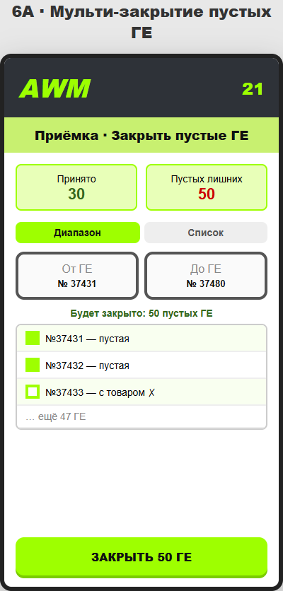
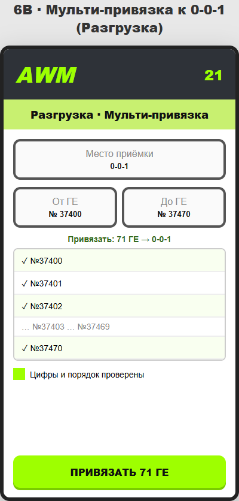
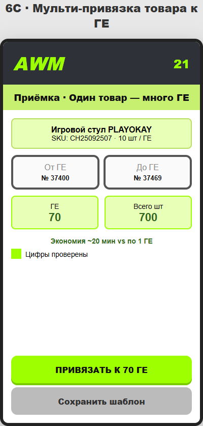
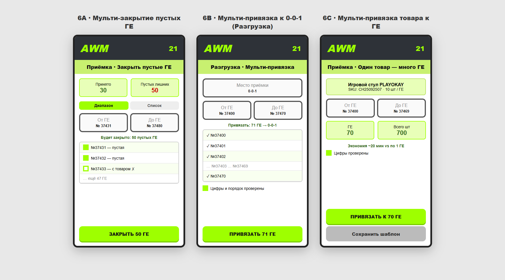

Мульти-операции — один модуль, три сценария
Общая идея: кладовщик повторяет одно действие десятки раз (закрыть ГЕ, привязать к месту, привязать товар). Вместо 50–70 сканов — режим «Мульти»: поля От ГЕ / До ГЕ, превью списка, галочка «Цифры проверены», одна зелёная кнопка. Сервер отсеивает непустые ГЕ и несовпадающий SKU.
6A · Закрытие лишних пустых ГЕ
Проблема: принял 30 паллет, осталось ~50 лишних пустых ГЕ — закрывает каждую вручную.
- Диапазон №37431 … №37480 → закрыть только пустые (с товаром — пропуск + предупреждение)
- Список Вкладка с чекбоксами «Непринятые пустые» + «Закрыть выбранные»
6B · Привязка ГЕ к месту 0-0-1 (Разгрузка)
Проблема: перед приёмкой ~70 ГЕ привязываются к 0-0-1 по одной через задание «Разгрузка».
- Диапазон №37400 … №37470 → массовая привязка к 0-0-1
- Превью Список 71 ГЕ перед кнопкой «ПРИВЯЗАТЬ»
- Импорт Подтянуть номера из задания разгрузки с сервера
6C · Привязка товара к множеству ГЕ (Приёмка)
Проблема: 70 ГЕ, 700 стульев, 10 шт/ГЕ → ~70 привязок × 15–20 с ≈ 23 минуты.
- Мульти Товар + 10 шт/ГЕ + диапазон №37400…№37469 → одна операция
- Шаблон Сохранить «стул PLAYOKAY · 10 шт» для следующих поставок
- Экономия Пакетом 70 ГЕ: −15…18 мин на партию
Как это может выглядеть на ТСД




💡 Своя идея: AWM 2.0
Не патч старого приложения, а пересборка UX под реальную работу кладовщика — всё из отчёта (п.1–6) собрано в один современный терминал.
- Мульти-центр — 6A / 6B / 6C в одном экране с вкладками
- Дашборд — принято / лишние ГЕ / экономия времени на виду
- Журнал 2.0 — только активные, избранное, debounce 350 мс
- Приёмка — кнопка «ГЕ ПРИНЯТА» серая → зелёная + прогресс
- Поиск ГЕ — overlay + FAB «Задания», сессия не сбрасывается
- Скан без Gboard — скрытое поле, inputmode=none
- Светлый UI — белый фон, лайм-акценты, Material Icons